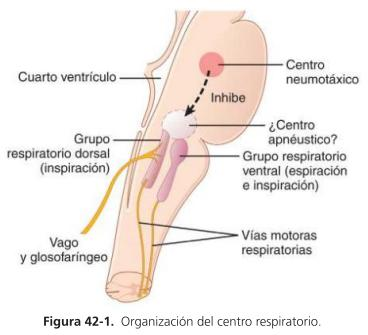
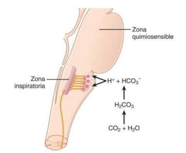
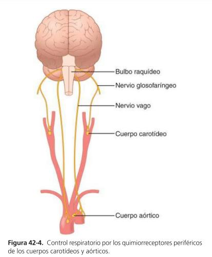
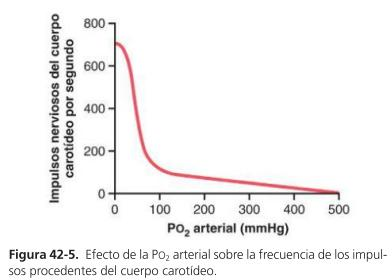
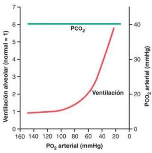

Introdução — O SNC como Regulador de Precisão
Em condições normais, o sistema nervioso central (SNC) ajusta a taxa de ventilação de forma quase exata à demanda metabólica do organismo. Por isso, a PO₂ e a PCO₂ praticamente não se alteram, mesmo durante o exercício e a maioria dos outros tipos de esforço respiratório.
✅ Ideia central do capítulo: o SNC atua como um regulador preciso que prioriza a estabilidade dos gases sanguíneos acima de qualquer perturbação externa.
Centro Respiratório — 3 Grupos de Neurônios

Figura 42-1. Organização do centro respiratório.
| Grupo | Localização | Função principal |
|---|
| Grupo respiratório DORSAL | Porção dorsal do bulbo | INSPIRAÇÃO (papel mais importante) |
| Grupo respiratório VENTRAL | Parte ventrolateral do bulbo | Respiração FORÇADA (inspiração e expiração) |
| Centro NEUMOTÁXICO | Porção dorsal superior da protuberância | Controla frequência e amplitude respiratória |
Grupo Respiratório Dorsal — Ritmo e Sinal em Rampa
O grupo respiratório dorsal é o principal responsável pelo controle da respiração, situando-se em grande parte dentro do núcleo do trato solitário (NTS) — terminação sensorial dos nervios vago e glossofaríngeo, que trazem sinais de quimiorreceptores periféricos, barorreceptores e receptores pulmonares.
🧠 Sinal Inspiratório em "Rampa": na respiração normal, o sinal ao diafragma começa fraco e sobe de forma constante por ~2 segundos, depois é interrompido bruscamente por ~3 segundos (permitindo a retração elástica dos pulmões = expiração passiva).
| Controle da rampa | Efeito |
|---|
| ↑ Velocidade de subida do sinal | Respiração mais intensa, expansão pulmonar mais rápida |
| Ponto de interrupção mais precoce | Inspiração mais curta → ↑ Frequência Respiratória (FR) |
Centro Neumotáxico — Limita a Inspiração
Controla o ponto de "desativação" da rampa inspiratória, limitando a duração da fase de expansão pulmonar.
| Sinal neumotáxico | Duração da inspiração | Efeito no volume pulmonar |
|---|
| Intenso | Até 0,5 segundos | Apenas leve expansão |
| Fraco | 5 segundos ou mais | Pulmões com excesso de ar |
✅ Efeito secundário importante: ao limitar a inspiração, o centro neumotáxico também reduz o ciclo respiratório total — por isso seu efeito líquido é aumentar a FR.
Grupo Respiratório Ventral — Reserva pra Respiração Forçada
- Fica quase totalmente inativo durante a respiração normal e tranquila.
- Não participa da oscilação rítmica básica que controla a respiração.
- Quando a demanda ventilatória sobe acima do normal, sinais do grupo dorsal ativam o grupo ventral — que passa a contribuir tanto na inspiração quanto na expiração ativa (forçada).
Reflexo de Insuflação de Hering-Breuer
Receptores de distensão nas paredes musculares de brônquios e bronquíolos enviam sinais pelos nervios vagos ao grupo respiratório dorsal quando os pulmões estão sobredistendidos.
🩺 O que o reflexo faz: desconecta a rampa inspiratória, interrompe inspiração adicional e aumenta a FR — agindo de forma parecida ao centro neumotáxico.
⚠️ Detalhe que cai em prova: em humanos, esse reflexo só é ativado quando o volume corrente ultrapassa 3x o valor normal (>1,5 L por respiração) — ou seja, é principalmente um mecanismo PROTETOR contra insuflação excessiva, não um fator relevante no controle normal da ventilação.
Controle Químico — O Objetivo Final da Respiração
Manter concentrações adequadas de O₂, CO₂ e H⁺ nos tecidos. O excesso de CO₂ e H⁺ no sangue estimula fortemente o centro respiratório, aumentando as sinais inspiratórias e expiratórias.
✅ Diferença crucial entre os gases: o CO₂ (e H⁺) age DIRETAMENTE sobre o centro respiratório. Já o O₂ NÃO tem efeito direto significativo — ele age quase totalmente através dos quimiorreceptores periféricos (corpos carotídeos e aórticos).
Área Quimiossensível e o Papel do CO₂

Figura 42-2. A zona quimiossensível é estimulada pelo H⁺ gerado a partir do CO₂.
A área quimiossensível fica a apenas 0,2 mm da superfície ventral do bulbo, e é muito sensível a alterações da PCO₂ sanguínea ou da concentração de H⁺.
🧠 Por que o CO₂ é mais potente que o H⁺ direto: os íons H⁺ são o estímulo direto real das neurônios quimiossensíveis, MAS não atravessam bem a barreira hematoencefálica (BHE). Já o CO₂ atravessa a BHE como se ela não existisse — uma vez dentro, reage com a água formando H₂CO₃ → H⁺ + HCO₃⁻, gerando H⁺ localmente, exatamente onde é preciso.
Quimiorreceptores Periféricos — A Via do O₂

Figura 42-4. Controle respiratório pelos quimiorreceptores periféricos dos corpos carotídeos e aórticos.
| Localização | Via aferente |
|---|
| Corpos carotídeos (bifurcação das carótidas comuns) | Nervo glossofaríngeo → zona respiratória dorsal |
| Corpos aórticos (arco da aorta) | Nervo vago → zona respiratória dorsal |
Esses quimiorreceptores são especialmente importantes pra detectar QUEDAS de O₂ sanguíneo, respondendo também, em menor grau, a alterações de CO₂ e H⁺.

Figura 42-5. Efeito da PO₂ arterial sobre a frequência de impulsos nervosos do corpo carotídeo.
✅ Comparação de potência e velocidade (dado bem específico): os efeitos diretos do CO₂/H⁺ sobre o PRÓPRIO centro respiratório são ~7 vezes mais potentes que os efeitos via quimiorreceptores periféricos. Porém, a via periférica é até 5 vezes mais rápida — por isso é especialmente importante pra acelerar a resposta ao CO₂ no INÍCIO do exercício.
PO₂ Baixa e Ventilação — Só Importa Abaixo de 100 mmHg

Figura 42-6. Efeito de uma PO₂ arterial baixa sobre a ventilação alveolar (CO₂ e H⁺ mantidos normais).
| PO₂ arterial | Efeito sobre a ventilação |
|---|
| > 100 mmHg | Efeito quase NULO sobre a ventilação |
| 60 mmHg | Ventilação aumenta ~2x |
| Muito baixa | Ventilação pode aumentar até 5x |
Aclimatação — Respiração Crônica de Baixo O₂
Alpinistas que sobem lentamente (dias, não horas) respiram mais profundamente e toleram concentrações de O₂ muito menores que em ascensões rápidas.
🩺 Mecanismo: em 2 a 3 dias, o centro respiratório perde ~80% de sua sensibilidade às alterações de PCO₂ e H⁺. Consequência: para de ocorrer a eliminação excessiva de CO₂ que normalmente inibiria o aumento da respiração — permitindo que a PO₂ baixa ative o aparelho respiratório até um nível de ventilação muito maior do que em condições agudas.
Regulação Durante o Exercício
No exercício intenso, o consumo de O₂ e a formação de CO₂ podem aumentar até 20 vezes. No atleta saudável, a ventilação alveolar aumenta quase exatamente em paralelo ao metabolismo — mantendo PO₂, PCO₂ e pH praticamente normais.
🧠 O detalhe que mais surpreende (e mais cai em prova): como PCO₂, pH e PO₂ NÃO mudam significativamente durante o exercício, NENHUM desses 3 fatores é o que estimula a respiração intensa nesse momento! O verdadeiro gatilho é neurológico: o encéfalo envia impulsos motores simultâneos aos músculos do exercício E ao centro respiratório (impulsos colaterais) — por isso a ventilação já aumenta ANTES de qualquer alteração química no sangue.
✅ Papel de ajuste fino dos fatores químicos: se os sinais neurológicos forem fortes ou fracos demais, os fatores químicos (CO₂, O₂, H⁺) entram como ajuste final, mantendo os gases o mais próximo possível do normal.
Outros Fatores que Influenciam a Respiração
Citados de forma breve pela professora — vale saber que existem, mesmo sem entrar no detalhe de cada um:
- Receptores de irritação das vias aéreas
- Receptores J pulmonares
- Edema cerebral (deprime o centro respiratório)
- Sobredose de anestésicos e narcóticos
- Respiração periódica — mecanismo básico da respiração de Cheyne-Stokes
- Controle voluntário da respiração
📚 Material de Apoio — Síntese Ampliada
⚠️ Nota de fonte: este material foi produzido a partir dos slides de aula da Profa. Michele Reis sobre este capítulo, com apoio de IA para organização e aprofundamento. Não substitui o conteúdo da professora — sempre confira com o Guia de Estudo (aba anterior) e com a professora em caso de dúvida. Baseado em Guyton & Hall, Tratado de Fisiologia Médica.
Por Que a Respiração Precisa de um "Regulador de Precisão"
O metabolismo celular é extremamente variável — do repouso ao exercício intenso, o consumo de O₂ e a produção de CO₂ podem mudar em até 20 vezes. Sem um sistema de controle preciso, essas oscilações causariam variações perigosas de PO₂, PCO₂ e pH. O SNC resolve isso combinando 2 tipos de controle:
| Tipo de controle | Como funciona | Velocidade |
|---|
| Neural/Central | Grupos neuronais no bulbo e protuberância geram o ritmo básico | Imediata (fração de segundo) |
| Químico | CO₂/H⁺ (direto no bulbo) e O₂ (via quimiorreceptores periféricos) | Segundos a minutos |
Os 3 Grupos do Centro Respiratório — Detalhamento
Grupo Respiratório Dorsal: o "marca-passo" da respiração. Gera o ritmo básico através de descargas inspiratórias repetitivas, mesmo isolado de outras influências. Está intimamente ligado ao NTS, que recebe informação sensorial via nervos vago e glossofaríngeo.
Centro Neumotáxico: funciona como um "freio" que limita quanto tempo a inspiração pode durar. Não gera ritmo por conta própria — apenas modula o que o grupo dorsal já está fazendo.
Grupo Respiratório Ventral: uma "reserva de potência" que só entra em ação quando a demanda ventilatória sobe muito — por isso participa tanto de inspiração quanto de expiração ATIVA (forçada), diferente da expiração passiva normal.
🧠 Analogia: pense no grupo dorsal como o "motor" que sempre roda, o centro neumotáxico como o "regulador de velocidade" desse motor, e o grupo ventral como a "marcha extra" que só engata quando é preciso mais força.
A Rota do CO₂ até o Cérebro — Passo a Passo
- PCO₂ sanguínea sobe (ex.: por metabolismo aumentado).
- O CO₂ atravessa livremente a barreira hematoencefálica (BHE) — ao contrário do H⁺, que tem baixa permeabilidade.
- Uma vez no líquido intersticial do bulbo e no LCR, o CO₂ reage com a água: CO₂ + H₂O → H₂CO₃ → H⁺ + HCO₃⁻.
- O H⁺ recém-formado, agora LOCALMENTE no tecido cerebral, estimula diretamente as neurônios da área quimiossensível.
- A área quimiossensível estimula o restante do centro respiratório, aumentando a ventilação.
✅ Por que isso é elegante: o corpo "contorna" o problema da BHE ser impermeável ao H⁺ usando o CO₂ como um "cavalo de Troia" — ele entra livremente e gera o H⁺ estimulante já do lado de dentro.
Quimiorreceptores Periféricos vs. Centrais — Tabela Comparativa
| Característica | Quimiorreceptores CENTRAIS (bulbo) | Quimiorreceptores PERIFÉRICOS (corpos carotídeos/aórticos) |
|---|
| Estímulo principal | CO₂ (indiretamente, via H⁺) | O₂ (queda de PO₂ arterial) |
| Também respondem a | H⁺ diretamente (fraco, por causa da BHE) | CO₂ e H⁺ (em menor grau) |
| Potência do efeito | ~7x MAIS potente que a via periférica | Mais fraca, mas relevante pro O₂ |
| Velocidade de resposta | Mais lenta | Até 5x MAIS rápida |
| Papel especial | Ajuste fino contínuo | Resposta rápida no início do exercício; único sensor eficaz de O₂ baixo |
Por Que o Exercício NÃO é Controlado pelos Gases Sanguíneos
Esse é um dos pontos mais contraintuitivos do capítulo. Seria lógico pensar que, no exercício, a queda de O₂ ou a subida de CO₂/H⁺ é que dispara o aumento da ventilação — mas as medições mostram que PCO₂, pH e PO₂ praticamente NÃO se alteram durante o exercício em pessoas saudáveis.
🩺 Explicação neurológica correta: o encéfalo, ao enviar comandos motores pros músculos que fazem o exercício, envia SIMULTANEAMENTE impulsos colaterais pro tronco encefálico, excitando diretamente o centro respiratório. Isso explica por que a ventilação já sobe no INÍCIO do exercício, antes mesmo de qualquer mudança química no sangue ter tempo de ocorrer.
✅ Papel dos fatores químicos no exercício: eles não são os DISPARADORES da hiperventilação — são o mecanismo de AJUSTE FINO, corrigindo pra mais ou pra menos caso o sinal neural tenha sido impreciso.
Aclimatação — Detalhando o Mecanismo
Em condições agudas de baixa O₂ (ex.: subida rápida de altitude), a hiperventilação inicial "lava" o CO₂ do sangue, reduzindo bastante a PCO₂ — e essa PCO₂ baixa, paradoxalmente, INIBE o centro respiratório, limitando o quanto a pessoa consegue hiperventilar mesmo com pouco O₂ disponível.
Na aclimatação (exposição prolongada, dias), o centro respiratório perde sensibilidade ao CO₂/H⁺ — então essa "trava" de PCO₂ baixa deixa de funcionar, e o estímulo do O₂ baixo via quimiorreceptores periféricos consegue elevar a ventilação a níveis muito mais altos que numa exposição aguda.
🧭 Roteiro de Interpretação — Regulação da Respiração
Diante de qualquer questão sobre controle respiratório, pergunte:
- A questão é sobre RITMO/gênese do movimento respiratório (grupos neuronais) ou sobre AJUSTE fino (fatores químicos)?
- Estou falando do efeito do CO₂/H⁺ (direto, no bulbo) ou do O₂ (indireto, via quimiorreceptores periféricos)?
- O contexto é repouso, exercício, ou uma condição especial (altitude/aclimatação, sobredistensão pulmonar)?
- Se for exercício: lembre que os gases sanguíneos NÃO mudam significativamente — o gatilho é neurológico.
- Se envolver reflexo de proteção pulmonar (Hering-Breuer): lembre que só ativa com volumes bem acima do normal.